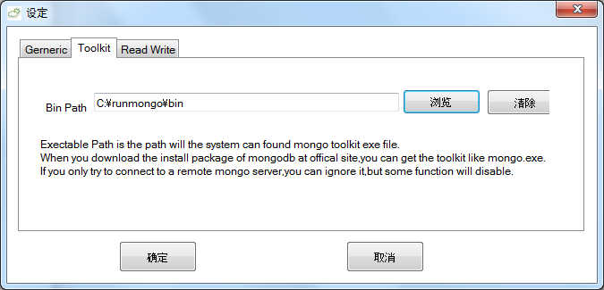
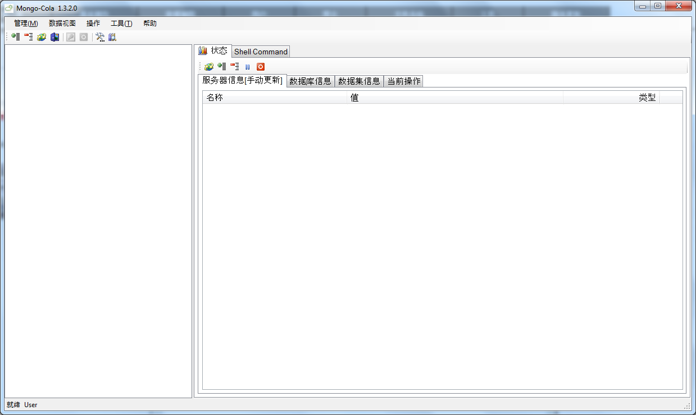

第一次启动
你可以选择简体中文作为程序的表示语言（繁体中文和日语现在已经部分支持了）

如果您下载了MongoDB的安装文件，您可以使用一些工具，请在下面的窗体中设定工具的路径

这里我们假设路径是 C:\runmongo\bin
如果启动正常，界面将会像下面这个样子.

Please make sure that the mongo server has been startup before adding connection.
You can startup mongoDB by DOS console like this:
cd C:\runmongo\bin
mkdir C:\mongodb\magicdict
mongod --port 28030 --dbpath C:\mongodb\magicdict

More reference @mongodb.org:Quickstart Windows
[A Mongo connection is not only a single server,but also a replset,a route or config server in sharding system]
Open the Connection Manager form by menu:
Managerment -> Connection Manager:

This form will list up all connections that you has registered in the application.
The list is empty when the first time you use this application,.
Click "Add" to register a new connection.

The simplest connection only need to fill 3 fields
- Connection(you can name the connection as you like)
- Host(the ip or host of server,you can fill ‘localhost’ when the server on you local machine)
- Port(the port of server, --port arg)

Pick the connection you registered right now, then click "OK".Now you can operate the mongo server.
All Status need to be refreshed manually in Mainform.(In status form,the some status will refresh automaticlly)
You can collapse or expansion the treeview by MenuItem:
- Management -> collapse
- Management -> expansion